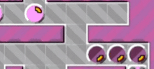
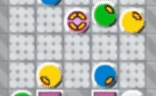
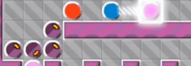

<center>
    <title>SynergyBallPush</title>
    <h1>Synergy Ball Push</h1>
    <h2>It is a term I created.</h2><h2>When one or more blocks push the Icy block (same link) in front, that Icy block moves two or more forward in one turn.</h2><h2>It's like a synergy effect.</h2>
    </img><br><br><br></img><br><br><br></img>
</center>
